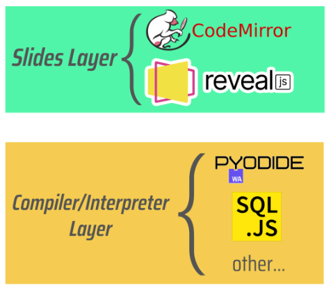

Features
The Interactive Code Playgrounds (ICP) are an alternative, standardized and accessible slideshow system that offers code editors (like repl.it) inside HTML slides. The key features of ICP are:
- In-browser, standardized and platform independent environment requiring no additional downloads, accessible on any device with an internet browser.
- Familiar slideshow interface for seamless integration into lectures.
- Works without any internet connection.
- Support for multiple programming languages: JavaScript, TypeScript, Python, Java, SQL, Processing, Standard ML, C/C++.
This is a concept for a web technology designed to treat offline students as first-class citizens (somewhat oximorically). The development cycle of ICPs requested frequent testing on a 15-years-old laptop as part of its QA.
We like to think of ICPs as an exercise in radical, but not disruptive, innovation. They enable many new forms of interaction and teaching, while not mandating the teachers and students who use them to change any of their habits.
Architecture
The figure above gives an idea of the architecture of ICP. The Slides Layer contains Reveal.js (the presentation framework) and CodeMirror (the code editors). In this layer the user can view the slides and write code. Once the code is executed, it is taken as a string and passed to the next layer. Here there are all the various compilers and interpreters which are needed to convert the string of code into WebAssembly (WASM), which can then be directly executed by the browser.
Since one of the main objectives of ICP is to be as inclusive as possible and work on as many devices as possible, the user (or who distirbutes the slides to the final users) can chose what compilers/interpreters to put into the second layer thanks to its modular structure, allowing to reduce both the data storage used by the slides and the data traffic needed to reproduce the slides (if they are used online).
Learn more in Luca De Menego's thesis or these in-depth notes.
Demo
The compilers/transpilers used to convert the various strings of code into WASM require ICP slides to be hosted in order for them to be executed. There are several ways to do so, but here in the Demo section there are the two easiest methods for the final user:
-
The slides are hosted on the internet and accessed through a link, requiring an internet connection to import all its dependencies
-
The slides are exported as a redbean file, a single, platform independent, executable file that takes care of both containing the slides and its dependencies and locally hosting it, allowing to access them offline by simply clicking the file
Download
Source Code
ICP is structured into several repositories based on its components:
- ICP Bundle - plugin for Reveal.js
- ICP Editor - offline web app to create ICP decks
- ICP Slides - sample slides
- ICP App - Android app for slides on mobile